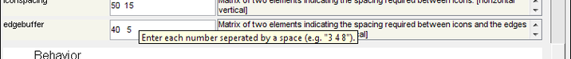

Solo CommonApplicationFeatures
Table of Contents | Previous | Next
Common Application Features
Solo contains several application features that are common to both the Workspace Browser window and the Analysis window as well as some other windows. Two of these features are the Options dialog box and the FigBrowser. See:
- "Options dialog box" below.
- FigBrowser.
Options dialog box
Options are settings that affect the behavior of a function or window in Solo. You can modify the default values for options so that the behavior of the functions and windows in Solo better suits your working needs. When an Options dialog box first opens, the dialog box lists all of the options that you can modify for the function or window, grouped by category. The dialog box also lists the current value for each option and a description of the option. For example, the figure below shows the Options dialog box for the Workspace Browser window. The options that are listed in the dialog box affect the display properties for the Workspace Browser (such as icon size, font size, and icon font, which are grouped in the Appearance category) and the interactivity properties for the Workspace Browser (such as single-click behavior versus double-click behavior and dragging functions, which are grouped in the Behavior category).
- Options dialog box
A variety of options are available for working with the dialog box:
|
|
|
|
- Viewing instructions for entering a value in an Options dialog box field
- A
- After you enter the value, and then click OK, the Options dialog box closes and you return to the opened window or tool for which you made the changes. Any changes that you made are effective immediately.
Note: Most options are persistent (remembered from one Solo session to another) while other options apply to only the current session, or only the current window (such as the Method options in the Analysis window.)
Users of PLS_Toolbox may also find this page of use when working with options at the Matlab command line: Working With Function Options.
FigBrowser
As you carry out an analysis, you can often generate multiple plots and other figures. You can use the FigBrowser utility for managing and viewing these multiple figures. This utility is available on the main menu of the Workspace Browser window, on the main menu of any analysis window, on the main menu of the Plot Controls window, and on the main menu of a Plot window.
- FigBrowser option
|
|
- Figure Browser window
|
Note: Although this option provides another means of navigating among multiple figures, if you have two of the same kind of plot open, then the only difference by which you can discern plots is the figure title.
- Find Figure option